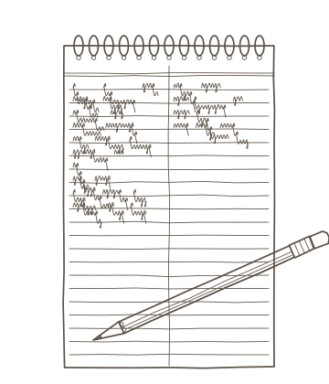
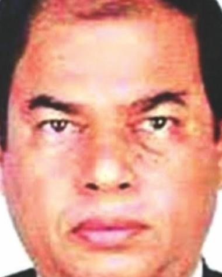
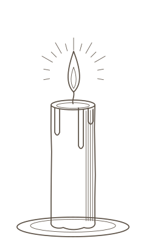

The journalists Bangladesh lost, and the justice that rarely came
Most worked outside Dhaka, many as local correspondents and editors. Most of their cases have never reached a verdict. This is a record of each of them, and of where each case stands.
Lutfuzzaman Fakir Alif was the most recent. The Netrokona correspondent of Ruposhi Bangla, an internet TV channel, was shot outside a shop in Telunjia village in Durgapur upazila on the evening of 15 October 2026. His wife filed a murder case the next day against unidentified people, and police have since arrested two people. The Daily Star previously reported that a Facebook page he ran had published reports on border smuggling. Police have not said why he was killed.
He is the latest name on a list The Daily Star has compiled from the records of the Committee to Protect Journalists, Reporters Without Borders, the International Federation of Journalists, UNESCO, Bangladeshi rights groups and newspaper archives: journalists and media workers killed by violence in Bangladesh since 1972.
Most of them were little known outside their districts. They were upazila correspondents, crime reporters and editors of small dailies, and many had reported on smuggling, drug gangs, armed groups or local politics before they were killed. The Committee to Protect Journalists, which applies a strict test, counts 28 of these deaths as confirmed work-related killings: killed in reprisal for their work, in crossfire or on a dangerous assignment. The others are cases in which CPJ has not confirmed a motive, cases it does not list, or killings from before its records begin in 1992. Each record below says which, and what police have said.
What most cases share is what happened next. The trial over the 1998 bomb killing of Saiful Alam Mukul, editor of the Daily Runner in Jashore, has been stalled for years by a High Court application from one of the accused, the public prosecutor told Views Bangladesh. The court deadline for the investigation report into the 2012 killing of Sagar Sarowar and Meherun Runi has been deferred more than 120 times.
Ink dots are cases in which a court has convicted someone. Red dots are cases in which no one has been convicted.
From 1996 to 2006, 11 journalists were killed in four southwestern districts: Khulna, Jashore, Satkhira and Jhenaidah. Several had reported on outlawed armed groups and criminal gangs, CPJ says.
In Dhaka, no one has been charged over the 2012 killing of Sagar Sarowar and Meherun Runi. From 2013 to 2016 bloggers, a publisher and a magazine editor were killed in machete and knife attacks, most of them in Dhaka; courts have convicted members of a banned militant group in five of those killings.
In July and August 2024, six journalists were killed during the student-led uprising, four of them on 18 and 19 July. One of them, CPJ says, was at a rally in a personal capacity, not reporting. None of the six cases has reached a trial.
Apart from those six, 12 more have been killed since 2020, most of them local reporters outside Dhaka. None of these cases has ended in a verdict.
The map as text, by district (names are in the list below)
Journalists killed, by the district where they were killed: Dhaka 19 (6 with a conviction); Khulna 7 (3 with a conviction); Jashore 4; Narayanganj 3; Brahmanbaria 2; Chuadanga 2; Cumilla 2; Habiganj 2 (1 with a conviction); Jamalpur 2; Satkhira 2; Sirajganj 2; Sylhet 2 (1 with a conviction); Bogura 1; Faridpur 1 (1 with a conviction); Gazipur 1; Jhenaidah 1; Khagrachhari 1 (1 with a conviction); Moulvibazar 1; Munshiganj 1; Narsingdi 1; Netrokona 1; Nilphamari 1; Noakhali 1; Pabna 1; Rangpur 1 (1 with a conviction).

Nearly 13 years to a verdict

Manik Chandra Saha
When a verdict does come, it comes slowly. Manik Chandra Saha, the Khulna correspondent of New Age and a contributor to BBC Bangla, was riding home from the Khulna Press Club on 15 January 2004 when men stopped his rickshaw and threw a bomb at him. Janajuddha, a faction of the outlawed Purbo Banglar Communist Party, claimed responsibility, CPJ reported.
Newest first. Each record gives what happened, who has been charged and where the case stood at the last report we could find.
Era
Case status
1 of 62
Lutfuzzaman Fakir Alif
Netrokona correspondent, Ruposhi Bangla
/ Durgapur, Netrokona
Under investigation On 21 October 2026 two people had been arrested in the case filed on 16 October. No charge sheet has been filed yet. As of October 2026.
Lutfuzzaman Fakir Alif was shot at about 7:30pm to 8pm on 15 October 2026 outside a shop in Telunjia village, Durgapur upazila, Netrokona. Bdnews24 says two young men already at the shop fired several shots. His wife filed a murder case on 16 October.
No motive has been officially stated. The Daily Star previously reported that his Facebook page—Detective Article—published investigative reports on border smuggling and other irregularities.
Suspects Police arrested Apurba (22) on 18 October 2026, and the police Special Response Battalion (SRB-14) arrested Ashikur Rahman Prangan (21) on 20 October and handed him to Durgapur police. SRB-14 said technical evidence made Prangan one of the main accused (The Daily Star Bangla, 21 October 2026).
Under investigation By 20 February 2026 four people were in custody and Jashore DB was investigating. No charge sheet has been found. As of February 2026.
Rana Pratap Bairagi was shot at about 6:30pm on 5 January 2026 near Jhumur Beauty Parlor in Kopalia Bazar, Manirampur. Police said he was shot in the head and chest and stabbed in the neck. His father filed a case against 10 to 12 unidentified people.
At a briefing on 20 February 2026, Jashore police said the killing arose from an internal conflict between banned extremist groups and alleged that he was involved in extortion. An editor at BD Khobor said he had been acquitted in the cases police cited. The interim government said the killing was not linked to journalism.
Suspects Police arrested Mahmud Hasan Hriday and Shamim Hossain in Tanore, Rajshahi on 20 February 2026, and detained Saddam Hossain and Rajib Molla on 17 February. Police said the suspects are Purba Banglar Communist Party members (Daily Times of Bangladesh).
Editor, Bartaman Somoy; president, Sholua Press Club
/ Khulna
Under investigation One suspect, Sabur Molla, was jailed on 1 January 2026. No charge sheet or trial has been found. As of January 2026.
Four armed men on two motorcycles shot Imdadul Haque Milon at a tea stall at Sholua Bazar at about 9:30pm to 10pm on 18 December 2025. He was declared dead at Khulna Medical College Hospital. A second man, Debashish Biswas, was also shot.
Police said the motive was being investigated. BSS reports police link the arrested suspect to a local gang.
Suspects Police arrested Sabur Molla (35) in Satkhira with RAB help on 31 December 2025. He was sent to jail on 1 January 2026 (BSS).
In court Police filed a charge sheet against eight on 25 August 2025, 17 days after the killing (UNB). No report of charges being framed or a trial has been found. As of August 2025.
Md Asaduzzaman Tuhin was filming armed men attacking a man in a market when he was chased into a tea stall and hacked to death at about 8pm on 7 August 2025, according to Prothom Alo via CPJ.
Police said he was killed after filming the assault and refusing to delete it. The Daily Star and TBS link it to his extortion reporting.
Suspects Police arrested Mizan (alias Ketu Mizan), his wife Parul Akter and others. A charge sheet of 25 August 2025 names eight people, including Mizan and Parul Akter.
Under investigation In July 2025 Babul Mia was arrested and charged with manslaughter (RSF, IFJ). No charge sheet, trial or verdict has been found. As of July 2025.
On 25 June 2025 a man released from prison that day first took Khandaker Shah Alam's phone and belongings in the street. In a later confrontation he punched and kicked Shah Alam in the chest. Shah Alam was pronounced dead on arrival at Nabinagar Health Complex.
RSF and IFJ say the attack was retaliation for his reporting on the case that sent the attacker to jail.
Suspects Babul Mia, alias 'Tiger Babul Dakat', was arrested and charged with manslaughter, according to IFJ (22 July 2025). RSF (18 July 2025) reported the arrest without naming him.
No case on record His wife has not filed a case, though several cases filed by others mention his killing (Prothom Alo). No arrests have been found. As of July 2025.
Sohel Akhanji was shot on 5 August 2024 during an attack and gunfire on protesters in the Eidgah area of Baniachong, the day Sheikh Hasina fled. Nine people died at the scene (Prothom Alo).
RSF attributes the shooting to police fire. Prothom Alo does not say who fired.
Suspects No one has been charged. Prothom Alo says local Awami League activists tried to block the procession.
No case on record Bangla Tribune reported in July 2025 that no case had been filed and that his family has no government support. As of July 2025.
On 4 August 2024 protesters attacked the Rayganj Awami League office and then the nearby press club, where Pradip Kumar Bhowmik was beaten, per Prothom Alo and The Daily Star. He was declared dead at hospital. Bangla Tribune says he was shot.
No motive is stated. He died in violence linked to the quota and non-cooperation movement, and UNESCO called for an investigation.
Under investigation The brother's case was filed on 19 August 2024, and constable Ujjal Sinha was held on five-day remand in November 2024. BSS reported on 26 July 2026 that court proceedings had not begun. As of July 2026.
Abu Taher Md Turab was shot on 19 July 2024 during firing on a procession after Friday prayers near Court Point in Sylhet city. He died at a hospital that evening.
CPJ attributes the shooting to police firing into a BNP procession he was covering in a press vest.
Suspects His brother's case of 19 August 2024 names 19 people and 250 unidentified. PBI arrested police constable Ujjal Sinha in Dhaka on 17 November 2024 (TBS).
Under investigation New Market police registered the case in July 2024 after a 13-hour wait. On 21 October 2024 his mother filed a complaint with the International Crimes Tribunal chief prosecutor against eight people. As of October 2024.
Tahir Zaman Priyo was shot in the head on 19 July 2024 near the Science Lab and Green Road area of Dhanmondi while police were firing at protesters (Prothom Alo). He died at the scene.
He was filming the unrest when he was killed. His mother's complaints blame police and former ministers (The Daily Star, October 2024).
Suspects No one has been charged. RSF reported no arrests in August 2025.
Under investigation His father Belayet Hossain filed a complaint with the International Crimes Tribunal naming 72 people (Bangla Tribune, July 2025); it is pending. No arrests or charges have been found. As of July 2025.
Shakil Hossain was shot in the chest on 18 July 2024 in front of Azampur Police Station in Uttara and declared dead at hospital (Prothom Alo).
CPJ initially reported that he was killed while reporting, then corrected its account: he was at a Dhaka student rally in a personal capacity, not reporting. RSF still counts him among six journalists killed.
Suspects No one has been charged. RSF attributes the shooting to police.
Under investigation On 15 September 2024 a court ordered his father's case registered at Jatrabari police station. In July and August 2025 a former MP was shown arrested and two former ministers were jailed after remand. No charge sheet or tribunal charges have been found. As of August 2025.
Mehedi Hasan was shot on the evening of 18 July 2024 near the Mayor Hanif Flyover in Kajla, Jatrabari, during the quota protests. He was taken to Dhaka Medical College Hospital, where he died at about 6pm.
CPJ reports his editor said law enforcement killed him while he covered clashes. The complaint alleges police and Awami League activists fired.
Suspects A court recorded former MP Kazi Monirul Islam Monu as arrested in the case on 16 July 2025. Former ministers Anisul Huq and Rashed Khan Menon were sent to jail after remand on 23 August 2025 (Bangla Tribune).
Under investigation In July 2024 the High Court granted bail to the main accused, who left Jamalpur jail on 10 July. CPJ said no charge sheet had been produced and a special prosecutor was appointed. As of July 2024.
Golam Rabbani Nadim was ambushed and beaten in Bakshiganj on the night of 14 June 2023 after he reported on a local politician. He died on 15 June at Mymensingh Medical College Hospital from a head injury (CPJ).
CPJ says sources believe he was targeted for May 2023 reports on a local Awami League official. RAB said the attack was planned over a grudge about the report.
Suspects His wife's case named 22 people. RAB arrested former UP chairman Mahmudul Alam Babu on 17 June 2023; 17 people were arrested by July 2023 (CPJ). The High Court later granted Babu bail.
Under investigation In January 2023 one man was arrested and the motive was unconfirmed. No charge sheet, trial or verdict has been found. As of January 2023.
Ashiqul Islam was ambushed by unknown people at about 7pm on 9 January 2023 while returning home by autorickshaw from a programme at Faruki Park in Brahmanbaria town. He was stabbed after he fell and declared dead at Sadar Hospital.
Police had not confirmed a motive (Dhaka Tribune, 9 January 2023).
Suspects Police arrested one man, Raihan, on suspicion (Dhaka Tribune, 9 January 2023).
No case on record In June 2022 no arrest was reported. No later arrest, charge sheet or closure report has been found. As of June 2022.
Abdul Bari's body was found at about 8:30am on 8 June 2022 on the bank of Hatirjheel lake near Police Plaza, with stab wounds on the neck and chest. A knife, wallet and phone were recovered nearby.
DBC News said the murder was likely due to pre-existing enmity (Dhaka Tribune). Police had not confirmed a motive.
Under investigation In April 2022 four people were arrested and the main accused, Razu, was killed in what RAB called a 'gunfight'. No charge sheet, trial or verdict has been found. As of April 2022.
Mohiuddin Sarker Nayeem was shot at about 9pm to 11pm on 13 April 2022 near a border crossing in Burichang. Border guards took him to hospital, where a doctor pronounced him dead on arrival. His mother filed a murder case.
RSF says he was killed while covering cross-border drug trafficking and police said traffickers lured him. CPJ has not independently confirmed the motive.
Suspects Police arrested four people on 14 and 15 April 2022. Razu, named as the main accused in his mother's case, was killed in what RAB called a 'gunfight' on 16 April 2022 (CPJ).
Under investigation In June 2023 Prothom Alo reported that the PBI investigation was still incomplete after two years. No charge sheet or verdict has been found. As of June 2023.
Borhan Uddin Muzakkir was shot on 19 February 2021 while covering a clash between two Awami League factions at Chaprashirhat, Companiganj. He died at Dhaka Medical College Hospital on 20 February.
CPJ lists the motive as confirmed (killed covering clashes) but could not determine who fired.
Suspects PBI arrested Belal Hossain, a Jubo League member, on 7 March 2021 (IFJ). The High Court granted bail to three accused in 2021; an Appellate Division chamber judge stayed it for six weeks (UNB).
Under investigation In February 2024 the key accused, Tushar, died in jail. Five accused were at large, according to an investigator. No charge sheet, trial or verdict has been found. As of February 2024.
Iliyas Hossain was stabbed in the evening of 11 October 2020 while returning home in Bandar upazila, Narayanganj. He was found in the street and declared dead at hospital. His wife filed a murder case naming eight accused.
CPJ relays reports of revenge for his articles on illegal gas connections. His family named brothers jailed after his reporting.
Suspects Police arrested three people, including Tushar, who gave a confessional statement to a magistrate. Tushar died in Narayanganj jail on 20 February 2024; prison authorities said suicide.
In court In June 2023 Prothom Alo reported the trial pending at the sixth additional district and sessions judge court, with witnesses testifying. Moazzem was on bail and Shahin in jail. No verdict has been found. As of June 2023.
Julhas Uddin was stabbed in the afternoon of 3 September 2020 at Barbaria in Dhamrai. Locals caught two men and handed them to police. He was declared dead at Manikganj hospital.
Police said the attacker may have acted out of revenge because Julhas married his former wife (Prothom Alo).
Suspects Police arrested Shahin Hossain and Moazzem Hossain on 3 September 2020. A January 2021 charge sheet left out two others named in the case.
Under investigation In November 2021 The Daily Star reported that the trial had not begun, with four of five accused not arrested. His father said police were stalling. No later report has been found. As of November 2021.
Ihsan Ibn Reza Fagun told his father on 21 May 2019 that he was taking the train home, then lost contact. His body was found beside the railway line near Jamalpur Sadar on 22 May 2019. Railway police first treated it as a fall.
His family rejects the account of a fall from the train and alleges murder. A suspect's confession cited theft of a laptop and phone.
Suspects His father said in June 2021 that three suspects were in custody and one had confessed. The Daily Star reported in November 2021 five accused, four not arrested, with the main accused at large.
Under investigation In September 2018 two accused had been arrested and her ex-husband was absconding. No charge sheet, trial or verdict has been found, and the status after 2018 is unconfirmed. As of September 2018.
Attackers rang the doorbell of Suborna Akter Nodi's home in Pabna town at about 10pm on 28 August 2018 and hacked her when she opened the door. She was declared dead at hospital.
Police and family cited a divorce and dowry dispute (IFJ). IFJ said the killing was not believed to be work-related.
Suspects Her mother's case names her ex-husband, his father Abul Hossain and Samsuzzaman Milon. Police arrested Abul Hossain on 29 August 2018 and RAB arrested Milon around 8 September; the ex-husband was absconding.
Under investigation In August 2018 police said JMB militants carried out the killing. The main accused died in what police called a 'gunfight'. No other arrests, charge sheet, trial or verdict have been found. As of August 2018.
Four masked men on two motorbikes set off a bomb outside a pharmacy at the Kakaldi intersection, Sirajdikhan, about 6:30pm on 10 June 2018, dragged Shahjahan Bachchu out and shot him in the chest. He was pronounced dead at the upazila health complex.
Police first suspected a local feud, then in August 2018 blamed JMB militants. His wife said he was on extremists' hit list.
Suspects Police arrested Abdur Rahman, whom they called a JMB commander who confessed. Police said he was killed in a 'gunfight' on 28 June 2018, and two more suspects later died the same way.
In court The case went to the Rajshahi Speedy Trial Tribunal in 2018, and in 2019 a Supreme Court chamber judge cleared the way for trial after a High Court stay. A Bangla report around February 2025 said the trial had not begun after eight years. As of February 2025.
Abdul Hakim Shimul was shot in the head on 2 February 2017 while covering a clash between two Awami League factions in Shahzadpur, Sirajganj. He died on 3 February while being taken to Dhaka.
CPJ says he was killed while covering unrest. Police and witnesses blamed the then mayor, who said he fired once in the air.
Suspects His wife's case names the then mayor, his two brothers and others. Police charge-sheeted 38 people.
Convicted On 31 August 2021 a Dhaka tribunal sentenced six to death and acquitted two. Zia and Akram are fugitives; the defence said it would appeal. As of August 2021.
Xulhaz Mannan and his friend Mahbub Rabbi Tonoy were killed at his home in Kalabagan, Dhaka, on 25 April 2016. Reports describe a machete and firearm attack.
CPJ lists the motive as confirmed. Police suspected the prime motive was his role in publishing Roopbaan.
Suspects A tribunal convicted six Ansar al Islam operatives: Syed Mohammad Ziaul Haque (alias Major Zia), Akram Hossain, Mozammel Hossain, Arafat Rahman, Sheikh Abdullah and Asadullah.
Convicted On 2 September 2026 a Rangpur court sentenced Rubel to death and two others to life, tried in absentia. The main accused and others were acquitted. The family said it would appeal. As of September 2026.
Mashiur Rahman Utsho was found hacked to death, tied to a tree, in the Dharmadas area beside the Dhaka-Rangpur highway in Rangpur city on the morning of 24 December 2015. He had disappeared the night before.
CPJ lists the motive as unconfirmed. Colleagues said he was targeted over his reporting on drug dealing.
Suspects A Rangpur court convicted Rubel (alias Hekram), Elin and Shuvo Kumar, all absconding. The main accused was acquitted.
Convicted On 10 February 2021 a Dhaka tribunal sentenced all eight to death; Zia and Akram were absconding. Two convicts escaped a Dhaka court lock-up on 20 November 2022 (UNB). As of November 2022.
Faisal Arefin Dipan was stabbed to death at his office in Shahbagh, Dhaka, on 31 October 2015. His wife filed a case at Shahbagh police station on 2 November.
CPJ lists the motive as confirmed. The tribunal said the convicts planned it because he published Avijit Roy's book.
Suspects A tribunal convicted eight Ansar al Islam members: Sayed Ziaul Haque (alias Major Zia), Moinul Hasan Shamim, Abdus Sabur, Khairul Islam, Sheikh Abdullah, Abu Siddiq Sohel, Mozammel Hossain and Akram Hossain.
In court Charges were framed on 18 January 2022. In 27 hearings from April 2022 to February 2026, only 5 of 15 listed witnesses testified. As of March 2026.
Niladri Chattopadhyay Niloy was hacked to death in his rented flat in the Goran area of Khilgaon, Dhaka, on 7 August 2015.
CPJ lists the motive as confirmed. Case documents attribute the killing to Ansar al Islam (Ansarullah Bangla Team).
Suspects A charge sheet of 4 October 2020 names 13 Ansarullah Bangla Team members. Four of them, Khairul, Abdullah, Mozammel and Arafat, are in jail; the others are on bail.
Under investigation Two men were under arrest by 24 July 2015. No charge sheet, trial or verdict has been found. As of July 2015.
A man broke into Abu Sayem's home in Piaratala, Jibannagar, and stabbed him and his father; IFJ dates the attack 7 July 2015. Sayem died on 8 July at a Dhaka hospital.
IFJ and Dhaka Tribune state no motive. Dhaka Tribune says he regularly wrote on border arms and drug smuggling.
Suspects Rajib Rahman (IFJ; Dhaka Tribune says Rajib Hossain) was arrested the day after the attack and remanded. A second man, Samajul, was arrested later.
Convicted On 30 March 2022 a Sylhet tribunal sentenced four to death, mostly in absentia. As of May 2024 the appeal and death reference were pending, and three convicts were still on the run. As of May 2024.
Ananta Bijoy Das was hacked to death by machete-wielding attackers near his home in Subidbazar, Sylhet, on 12 May 2015, on his way to work. His brother filed a case the next day.
CPJ lists the motive as confirmed. Press reports say Ansarullah Bangla Team claimed responsibility; the tribunal convicted militants.
Suspects A Sylhet tribunal convicted Abul Hossain, Faisal Ahmed, Harun Or Rashid and Abul Khair Rashid Ahmed. Shafiur Rahman Farabi was acquitted.
In court Charges were framed on 20 July 2016. By 17 February 2026, 24 of 40 witnesses had testified, none since the case moved to a new court in December 2022. As of March 2026.
Washiqur Rahman Babu was hacked to death in the Tejgaon Industrial Area, Dhaka, on 30 March 2015.
CPJ lists the motive as confirmed. The accused were linked to Ansarullah Bangla Team; he was a secular blogger.
Suspects A charge sheet of 2 September 2015 names Zikrullah, Ariful Islam, Saiful Islam, Akram Hossain and Junaid Ahmed. Three were granted bail in 2024 and 2025; Akram and Junaid have absconded.
Convicted On 16 February 2021 a Dhaka tribunal sentenced five to death and Farabi to life; the defence appealed. In July 2025 the High Court granted Farabi interim bail pending appeal. As of August 2025.
Avijit Roy and his wife, Rafida Ahmed Bonya, were pulled from a rickshaw near the Dhaka University Teacher-Student Centre at about 8:30pm on 26 February 2015 and attacked with machetes. He died at Dhaka Medical College Hospital; she survived.
CPJ lists the motive as confirmed. The court and police tied it to his writing on secularism.
Suspects A court convicted six members of the banned Ansar al-Islam: five sentenced to death and Shafiur Rahman Farabi to life.
In court Charge framing at a Dhaka court was deferred on 25 October 2026 to 8 November 2026 because a jailed accused was not produced. The trial has not started. As of October 2026.
Nurul Islam Faruqi was found with his throat slit at his East Rajabazar home in Dhaka at about 8pm on 27 August 2014. Police and family said he had no known enmity.
CPJ lists the motive as unconfirmed. The CID charge sheet says the accused believed he spread a 'false ideology' about Islam through the media.
Suspects A CID charge sheet of 5 November 2024 names six people. Three, Hadisur Rahman Sagar, Abdullah Al Tasnim Nahid and Ratan Chowdhury, are in custody; three are fugitives.
Under investigation In May 2014 police said only that they were investigating. No arrest, charge sheet or verdict has been found. As of May 2014.
Sadrul Alam Nipul left home on the night of 20 May 2014 after a phone call. His body was found at a railway station in Chuadanga district on 21 May. Police said they were investigating.
CPJ lists the motive as confirmed. His family said he was targeted over reports on drug trafficking and illegal seizures of property.
Convicted In March 2017 a Dhaka speedy trial tribunal sentenced five to death and one to seven years. On 12 October 2022 the High Court upheld the death sentences; two convicts are fugitives. As of October 2022.
Photojournalist Aftab Ahmed, who lived alone, was found dead at his Rampura home on the morning of 25 December 2013 with his hands and legs tied. Police first suspected strangulation and theft.
Police said robbery, and the High Court said in 2022 that he was killed for money. No link to his work was found.
Suspects A Dhaka tribunal convicted his housemaid, his driver Humayun Kabir Molla and associates in 2017.
Blogger 'Thaba Baba'; freelance journalist per CPJ
/ Pallabi, Dhaka
Convicted On 31 December 2015 a Dhaka tribunal sentenced two to death (one absconding), Rahmani to five years and six others to prison. On 2 April 2017 the High Court upheld the death sentences. As of April 2017.
Ahmed Rajib Haider was attacked with machetes near his home in Pallabi, Dhaka, on 15 February 2013. A case was filed at Pallabi police station.
CPJ lists the motive as confirmed. He wrote against Islamist fundamentalism and for war-crimes trials; the convicted men were linked to Ansarullah Bangla Team.
Suspects A Dhaka tribunal sentenced Faisal Bin Nayem (Dweep) and Redwanul Azad Rana to death in 2015. Mufti Jashim Uddin Rahmani, Ansarullah Bangla Team leader, got five years, and six others were jailed.
No case on record Police said in October 2012 they were pursuing the attackers. No charge sheet, trial or verdict has been found. As of October 2012.
Three or four unidentified gunmen shot Talhad Ahmed Kabid at about 7:30am at his mobile phone shop in Shalidah, Narsingdi town, on 23 October 2012. He was pronounced dead at Narsingdi hospital.
Police did not know the motive. RSF says a link to his journalism could not be ruled out.
Convicted In September 2019 a Habiganj court sentenced Farid Miah, Badshah Miah and Rahul Miah to life. Farid Miah is a fugitive reported to be abroad. No appeal outcome has been found. As of September 2019.
Junaid Ahmed went missing on the night of 10 July 2012. His body was found on the railway tracks at Shaistaganj Junction the next day. His brother filed a case on 12 July.
No motive linked to his journalism has been stated. He also held a post in the Jubo Dal.
Suspects Police charge-sheeted four men. Farid Miah, Badshah Miah and Rahul Miah, all of Sataihal village, Nabiganj, were convicted in 2019. A fourth accused, Abdul Hamid, was killed in a mob beating.
Under investigation The case moved to the CID in September 2012. No charge sheet, trial stage or verdict has been found. On 21 August 2026 accused Ukil Mallik was arrested on a court warrant. As of August 2026.
Jamal Uddin was called to a tea stall at Kashipur Bazar, Sharsha, late on Friday 15 June 2012. Attackers with sharp weapons stabbed and hacked him. He died that night on the way to or at hospital.
CPJ lists the motive as confirmed. Police told local journalists it was probably linked to threats after his reporting on the drug trade.
Suspects His father's case at Sharsha police station names seven accused. Police arrested several people in 2012, and on 21 August 2026 Sharsha police arrested accused Ukil Mallik on a court warrant.
Under investigation The court deadline for the investigation report has been deferred about 130 times, most recently on 30 September 2026. In September 2024 the High Court removed RAB from the case and ordered a task force, which was formed in October 2024; the High Court last extended its term on 27 October 2026. As of October 2026.
Meherun Runi and her husband, Sagar Sarowar, were found stabbed to death in their rented flat in West Razabazar, Dhaka, on the morning of 11 February 2012. Their five-year-old son was at home and found them.
CPJ lists the motive as unconfirmed, and police said in February 2012 that they could not determine one. Colleagues and rights groups link the killings to the couple's reporting; investigators have made no finding.
Suspects No one has been charged. No charge sheet has been filed.
Under investigation The court deadline for the investigation report has been deferred about 130 times, most recently on 30 September 2026. In September 2024 the High Court removed RAB from the case and ordered a task force, which was formed in October 2024; the High Court last extended its term on 27 October 2026. As of October 2026.
Sagar Sarowar and his wife, Meherun Runi, were found stabbed to death in their rented flat in West Razabazar, Dhaka, on the morning of 11 February 2012. Their five-year-old son was at home and found them.
CPJ lists the motive as unconfirmed, and police said in February 2012 that they could not determine one. Colleagues and rights groups link the killings to the couple's reporting; investigators have made no finding.
Suspects No one has been charged. No charge sheet has been filed.
Convicted On 11 October 2012 a Dhaka court sentenced Yon and Raju Ahmed to death. On 16 October 2018 the High Court commuted both sentences to life imprisonment. As of October 2018.
Farhad Khan and his wife, Rahima Khanam, were killed in their rented flat in Naya Paltan, Dhaka, on 28 January 2011. They were hacked to death. His brother filed a case against unknown persons.
No link to his work was found. The men convicted were his nephew and the nephew's friend.
Suspects A Dhaka court convicted his nephew, Nazimuzzaman Yon, and Yon's friend Raju Ahmed in 2012.
Under investigation A UNESCO status report in April 2017 said the investigation was still open at Kalaroa police station, with the CID involved. No verdict has been found. As of April 2017.
Four or five men stopped Bellal Hossain Dafadar while he was cycling home from a bazaar at Pinchhlapole, Kalaroa, at about 7pm on 14 September 2006 and stabbed him. He died later that night at a Khulna hospital.
Local reports in The Daily Star linked it to his protest against tree felling along the Satkhira-Jashore road. CPJ and RSF did not count it as work-related.
Suspects The Daily Star (2006) reported no arrests. A later Daily Star report said 13 people were charged, including local Jamaat-e-Islami and Jubo Dal leaders.
Convicted On 27 June 2013 a Dhaka tribunal gave nine life terms. On 30 January 2019 the High Court upheld five and acquitted four. No Appellate Division outcome has been found. As of January 2019.
Gautam Das was found strangled in his locked office in Faridpur on 17 November 2005, with a nylon rope round his neck. A colleague had called police after getting no answer.
CPJ said no motive was established at first. A case statement links it to his Samakal reports on corruption by opposition-party figures.
Suspects Police arrested Tamjid Hossain Babu on 19 November 2005. Nine were convicted in 2013. In 2019 the High Court upheld five life terms and acquitted four (Financial Express).
Convicted On 28 November 2007 a Khulna speedy trial tribunal sentenced three people to life and acquitted three. His parents said alleged financiers were left out of the charge sheet. As of November 2007.
A bomb hidden in a bag on Sheikh Belaluddin Ahmed's moped exploded outside the Khulna Press Club at about 9:15pm on 5 February 2005. He died on 11 February at the Combined Military Hospital in Dhaka.
The Purba Banglar Communist Party (Maoist) claimed responsibility (RSF). CPJ lists the motive as confirmed.
Suspects Six were charged in November 2005. Three were convicted: Syed Iqbal Hossain Shahhin, Rafiqul Islam (alias Hasan) and Sirajul Islam (alias Merejall). Three were acquitted.
No case on record No arrests, charges or trial have been found. As of October 2004.
Shahid Anwar was shot by unidentified attackers in Dhaka on 24 October 2004, either at his office or while going to it by rickshaw (sources differ). He died on the way to hospital or after being taken there.
Police suspected personal rivalry (INSI) and said they were investigating a motive. UNESCO and IFJ condemned the killing.
Suspects No one has been charged. Police had not identified the attackers (Dawn, 25 October 2004).
Under investigation Nine investigating officers failed to solve the case before 2017, and the family rejected police final reports at least four times (The Daily Star, November 2021). There has been no trial. As of November 2021.
Attackers intercepted Dipankar Chakrabarty on his way home from work and attacked him with an axe at about 12:30am on 3 October 2004 in Sherpur, Bogura. His son filed a case at Sherpur police station that day.
CPJ found no motive then. Police said in 2017 a JMB commander told a magistrate Bangla Bhai ordered it; his son called that baseless.
Suspects Police said JMB commander Jahangir Alam (alias Rajib Gandhi), arrested in January 2017, confessed before a magistrate in March 2017. No charges or trial have been reported. A 2013 final report released seven arrestees.
Convicted In March 2006 a Chattogram tribunal sentenced one man to death in absentia and 11 to life, and acquitted 14. The 11 said they would appeal; no High Court outcome has been found. As of March 2006.
Armed men took Kamal Hossain from his home at gunpoint in the middle of the night, after threatening his two-year-old son. Police found his body nearby hours later on Sunday 22 August 2004.
CPJ says local journalists linked it to his reporting on organised crime. CPJ also noted a land dispute with a neighbour.
Suspects Police framed charges against 26 people. On 21 March 2006 a Chattogram tribunal convicted 12 and acquitted 14 (RSF).
Editor, Dainik Janmabhumi; president, Khulna Press Club
/ Khulna
Convicted (explosives case) The murder case ended in the acquittal of seven people in 2008 and went to the CID for further investigation in 2009. On 18 January 2021 a Khulna tribunal sentenced five people to life in the explosives case over the same attack. No appeal outcome has been found. As of January 2021.
A man posing as a peanut seller threw homemade bombs at editor Humayun Kabir Balu outside his home in Khulna on 27 June 2004. He died soon after at Khulna Medical College Hospital.
CPJ says he had criticised organised crime groups and received threats; Janajuddha claimed responsibility by phone.
Suspects Seven accused were acquitted in the murder case in February 2008. In a separate explosives case over the same attack, a Khulna tribunal sentenced five people to life on 18 January 2021; one, Masum alias Jahangir, was absconding.
Khulna correspondent, New Age; BBC Bangla contributor
/ Khulna
Convicted In November 2016 a Khulna tribunal sentenced nine people to life and acquitted two; five of the nine were on the run. In June 2025 convict Abdus Sattar surrendered after 20 years. As of June 2025.
Unidentified men stopped the rickshaw in which Manik Saha was riding home from the Khulna Press Club and threw bombs, killing him on 15 January 2004. Janajuddha, a faction of the Purbo Banglar Communist Party, claimed responsibility.
CPJ says he reported on criminal gangs, drug traffickers and Maoist insurgents, and shows the motive as confirmed.
Suspects Police charged 13 alleged Maoist insurgents in June 2004 (CPJ). Fourteen were accused at trial, of whom three died in 'crossfire' (The Daily Star, 2016).
Under investigation In November 2021 The Daily Star reported that police filed a case but never pursued it, according to the local press club. As of November 2021.
Editor Syed Farroque Ahmed disappeared. More than two months later, police found his body in the Sreemangal area on 3 August 2002.
CPJ lists the motive as unconfirmed, and police had no leads. RSF and BCDJC had no evidence tying it to journalism.
No case on record The Daily Star reported in November 2021 that the case saw no convictions. No arrest or trial has been reported in the sources found. As of November 2021.
About 35 armed men took Shukur Hossain from his home in Ula village at about midnight on 5 July 2002. He was last seen near the Ghangrail River and two villagers reported hearing shots. A body was not reported found in the sources we saw.
CPJ counts him as killed with motive confirmed. Police suspected the outlawed Biplobi Communist Party (CPJ); RSF blamed Maoist-linked militants.
Closed, no conviction On 7 February 2006 a Khulna tribunal acquitted all three accused, and the press club demanded a fresh investigation. The Daily Star described the case as dismissed in November 2021. As of November 2021.
Senior reporter Harunur Rashid was shot by gunmen while riding his motorcycle to work at about 8pm on 2 March 2002 at Mujgunni in Khulna.
CPJ lists the motive as confirmed, a reprisal for reporting on corruption and criminal syndicates.
Suspects Police charge-sheeted and tried three men: Mohammad Shahin, Shaikh Moktar Hossain (alias Baby) and Mohammad Amjad Hossain (alias Kala Amjad).
No case on record CPJ's page gives no information on arrests or prosecutions, and no case or trial has been found. As of January 2002.
Ahsan Ali was reported missing on 20 July 2001 and his body was found on 22 July in an irrigation canal at Rupganj. Police told CPJ he had been bound and stabbed to death.
CPJ lists the motive as unconfirmed. His wife said he had death threats from a local Awami League youth-wing leader, and suggested a land dispute.
Closed, no conviction The Daily Star reported in November 2021 that the case had been disposed of after a doctor told the court he died in an accident. As of November 2021.
Masked men abducted Nahar Ali in April 2001, beat and stabbed him and left him near his village. He died in a hospital in Khulna. CPJ gives 21 April as the date of death.
CPJ sources say he was likely killed over reporting on local criminal syndicates. Police suggested a shrimp-farm dispute.
Suspects Police arrested suspects within days, reportedly members of a dissident Biplobi Communist Party faction. A charge sheet against 16 people was filed in March 2002.
In court A charge against Farazi Azmal Hossain was framed in June 2005 and stayed by the High Court that August. In November 2021 The Daily Star said the trial had not begun because an accused held an Appellate Division stay. As of November 2021.
Two armed men entered Shamsur Rahman's office on Jail Road in Jashore at about 8:20pm on 16 July 2000 and shot him in the head and chest. He was alone and was declared dead at Jashore General Hospital.
CPJ says he covered criminal gangs and armed political groups and had received death threats. Police told CPJ, citing confessions, that a smuggling gang from Khulna planned it.
Suspects The CID charged 16 people in May 2001, and a supplementary charge sheet named 17, including Ittefaq reporter Farazi Azmal Hossain. CPJ says all early suspects had been released by the end of 2000.
No case on record CPJ reported no arrests in 2001. No later case, arrest or trial has been found. As of March 2001.
Three unidentified men on a motorcycle shot editor Mir Illias Hossain at close range while he was talking outside a shop in Jhenaidah on 15 January 2000. His friend Alfaj Uddin was also shot and died on the way to hospital.
CPJ sources believe he was targeted for his journalism, though CPJ notes he had been active in a radical leftist group.
Suspects No one has been charged. CPJ reported no arrests.
In court Charges were framed in 2006, but the lower-court trial has stalled for 14 to 16 years while an accused's High Court application is pending. As of August 2026 there was still no verdict. As of August 2026.
Editor Saiful Alam Mukul was killed in a bomb attack at about 10pm on 30 August 1998 while travelling to his home in Bezpara, Jashore town. He was pronounced dead at Jashore General Hospital.
CPJ says Runner had reported on local gangs, political corruption and guerrilla activity, and he had told police he feared an attack.
Suspects A 1999 charge sheet named 22 people; two were later discharged. Accused Faraji Azmal Hossain, a journalist, has sought release in the High Court.
In court The High Court quashed the case in 1998 and the Supreme Court restored it in March 1999. Trial began in July 2011 with witness testimony. No verdict has been found. As of June 2017.
Editor S. M. Alauddin was shot dead by assailants in his office in Satkhira town on 19 June 1996.
CPJ lists the motive as unconfirmed. CPJ says police attributed the killing to a political feud but gave no details.
Suspects Police arrested a Jubo League activist, Saiful Islam, five days later (The Daily Star). In May 1997 police charge-sheeted ten people, including him.
No case on record The Daily Star reported in 2008 that no judicial inquiry was held and no one was punished. In November 2021 its district correspondent said no trial ever took place. As of November 2021.
Police fired on opposition protesters near Nilphamari's municipal market around midnight on 18 to 19 February 1996, after the 15 February election. He was photographing the action when he was hit, then beaten with rifle butts until he died.
CPJ lists the case as motive confirmed: he was killed while covering post-election unrest.
Closed, no conviction In the separate case over his killing, a Dhaka court acquitted all the accused on 30 December 2002 after a CID final report (Dhaka Tribune). In the Bangabandhu murder case, the Appellate Division upheld 12 death sentences in 2009; five convicts were executed in January 2010 and fugitive convict Abdul Majed was hanged on 12 April 2020. As of April 2020.
Sheikh Fazlul Haque Moni and his wife, Arzu Moni, were killed at their Dhanmondi home on the night of 15 August 1975, when Sheikh Mujibur Rahman was assassinated. Banglapedia says a group of army personnel killed him.
No source links the killing to his journalism. Banglapedia and the Dhaka Tribune describe him as killed in the 15 August 1975 coup in which Sheikh Mujibur Rahman was killed.
Suspects Army officers of the August 1975 coup were tried in the Bangabandhu murder case. In the separate case over his killing, the CID gave a final report clearing the accused in August 2002 (Dhaka Tribune).
Editor, Madhumala; assistant secretary, East Pakistan Journalists' Union
/ Dhaka
No case on record No case, arrest or trial has been found in the sources we checked; 1972 press is not available online.
Writer and journalist Golam Rahman was murdered in Dhaka in January 1972, weeks after independence. Banglapedia says only that he was murdered. It gives no method or circumstances.
No source links the killing to journalism, and none states a motive.
Who is included: journalists and media workers (reporters, correspondents, editors, publishers, photojournalists, online journalists, and bloggers where CPJ counts them as journalists) killed by violence in Bangladesh from 1 January 1972 to 1 November 2026. Accidents and illness are excluded. Inclusion does not mean the killing was linked to the person's journalism; each record says what is known about the motive.
A case is listed when at least two independent reliable sources, or one strong source (CPJ, RSF, IFJ, UNESCO or a major Bangladeshi daily), confirm the killing. Deaths that remain disputed (bodies found, deaths called suicide or accident) and names that appear in a single list are not included, so the true number is likely higher.
Records before 1992, when CPJ's database begins, are thin.
Sheikh Fazlul Haque Moni, editor of Banglar Bani, is included because he was an editor; he was killed in the coup of 15 August 1975, and no source links his killing to his journalism. Convictions in the Bangabandhu murder case are not counted as a conviction in his case, in which all accused were acquitted in 2002.
Rana Pratap Bairagi, acting editor of Dainik BD Khobor, is included as a journalist killed in 2026. Police say his killing arose from a conflict between banned extremist groups, and the interim government has said it was not linked to journalism.
"Convicted" means a trial court found at least one person guilty, even if an appeal is pending. In Humayun Kabir Balu's case, the convictions came in a separate explosives case over the same attack; the murder case ended in acquittal.
Case status is as of the most recent report we found, given in each record. Locations are placed at the centre of the upazila.

Research, data and visualisation
Mir Rownak
Sources: CPJ, RSF, IFJ, UNESCO, IFEX, ARTICLE 19, IPI, ASK, PEC, BCDJC, Front Line Defenders, INSI.